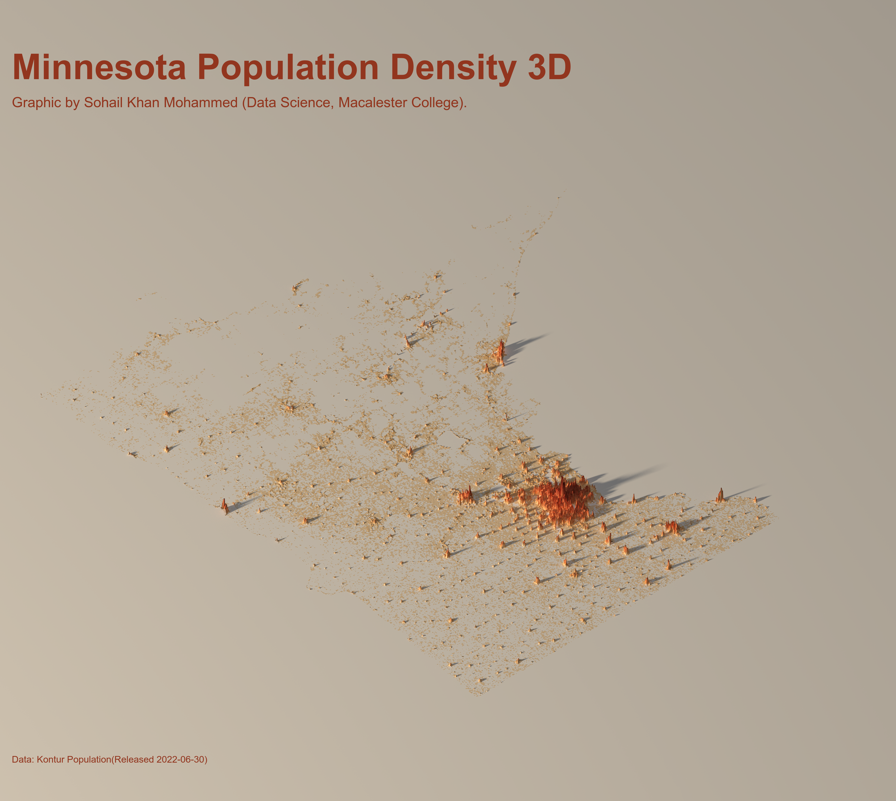

# Load necessary librarieslibrary(tidyverse)library(plotly)library(datasets)library(sf) # spatial liblibrary(rayshader) # 3d liblibrary(tigris)library(maps)library(stars) # helps rasterize and then convert to matrixlibrary(rgl)library(ggthemes)library(viridis)library(ggplot2)library(MetBrewer)library(colorspace)
loading the data
Code
# data <- st_read("../pv/kontur_population_US_20220630.gpkg")head(data)
Code
# seperating the states with states function from tigris packagestates <-states()glimpse(states)
Code
# filtering out Minnesotaminnesota <- states %>%filter(NAME =="Minnesota")
Code
# checking out the mapminnesota %>%ggplot() +geom_sf()
Code
# checking the crs of data and crs of minnesotast_crs(data) # WGS 1984st_crs(minnesota) # NAD 83
Code
# transforming the crs of minnesota to the crs of our data points using st_transform function from sf packageminnesota<-minnesota %>%st_transform(crs =st_crs(data))
Code
# checking the crs of minnesotast_crs(minnesota) # changed to wgs 84
Code
# combining the datapoints of just minnesota to our minnesota polygon# basically checking each geometry in our data against the boundary geometry of Minnesota to compute where they overlapstate_minnesota <-st_intersection(data, minnesota)
Code
# Note about reyshader : It ingests data in matrix format# definig the bouding box that precisely defines the spatial extent (the geographic area) that will be visualized using st_box which takes an object# gave 4 positions : xmin, ymin, xmax, ymax -- helps us find corners of the box in 2dbb <-st_bbox(state_minnesota)bb
Code
# converting the numbers/positions to points and convert to spatial object for spatial viz# xmin -- left most in coordinate plane and ymin is the bottom most and vice versa with xmax and ymaxbottom_left <-st_point(c(bb[["xmin"]], bb[["ymin"]])) %>%st_sfc(crs =st_crs(data)) # converts this into spatial objectbottom_right <-st_point(c(bb[["xmax"]], bb[["ymin"]])) %>%st_sfc(crs =st_crs(data))
Code
# plotting the points on minnesota to just checkminnesota %>%ggplot() +geom_sf() +geom_sf(data = bottom_left, color ="brown") +geom_sf(data = bottom_right, color ="blue")
Code
# calcultaing the distance between the bottom_left and bottom_right with st_distance()width <-st_distance(bottom_left, bottom_right)width # it's units is meters(defined in the CRS ), its 862.61 km# finding height --- distance between bottom left and top left# 950.78 kmtop_left <-st_point(c(bb[["xmin"]], bb[["ymax"]])) %>%st_sfc(crs =st_crs(data))height <-st_distance(bottom_left, top_left)height
Code
# standardizing the aspect ratio ( refers to the prpotional relationhship between dimensions and ensures that scale along x,y,z is consistent so 3D reflects real world porportions accurately. )# Basically handling the condition width of height being longer side by dividing both width and height by the maximum of the two(either width/height), producing normalized values that range from 0 to 1 for the largest dimension.# which is our caseif (height > width) { h_ratio <-1 w_ratio <- width/height} else { w_ratio <-1 h_ratio <- height/width}# h_ratio = 1, w_ratio = 0.90
Code
# convert to raster to convert to matrixx and passing height and width and giving full size to our larger side (hieght)size <-1000size_num <-as.numeric(size)w_ratio_num <-as.numeric(w_ratio)h_ratio_num <-as.numeric(h_ratio)minnesota_rast <-st_rasterize(state_minnesota, nx =floor(size_num * w_ratio_num),ny =floor(size_num* h_ratio_num))# since we're only interested in the population variablemat <-matrix(minnesota_rast$population,nrow =floor(size_num* w_ratio_num),ncol =floor(size_num * h_ratio_num))# 3d plotting : basic workflow -- with rayshader, plot in a rgl( create a 3d model of it) and then use render high quality to retrace very well and make it look super cool!library(rgl)library(rayshader)# creating the color palette# checking out color palette ( cool swatchplot function from colorspace package)library(MetBrewer)color_P1 <-met.brewer("OKeeffe2")swatchplot(color_P1) # heightshade takes texture argumenttexture <- grDevices::colorRampPalette(color_P1, bias =3)(256)swatchplot(texture)mat %>%height_shade(texture = texture) %>%plot_3d(heightmap = mat, zscale =100, solid =FALSE, shadowdepth =0, background ="white") # removing the solid from the bottom of the imagerglwidget()# allows us to to adjust the view. theta controls rotation(shadow), phi controls Azimuth angle etc. More at ?render_camera()render_camera(theta =-40, phi =45, zoom =0.9 ) output_file <-"../pv/images/test_plot.png"# checking the time it takes and also not making too high resolution its taking too much time {start_time <-Sys.time()cat(crayon::cyan(start_time), "\n")if(!file.exists(output_file)){png::writePNG(matrix(1), target = output_file)}render_highquality(filename = output_file ,interactive =FALSE,lightdirection =280,lightaltitude =c(20, 80),lightcolor =c(color_P1[2], "white"),lightintensity =c(600, 100),samples =250,width =4000,height =4000)end_time <- Sys.timediff <- end_time - start_timecat(crayon::cyan(diff), "\n")}
Code
# reloading packages due to errors library(magick)library(sysfonts)library(showtext)library(MetBrewer)library(colorspace)library(tidyverse)library(plotly)library(datasets)library(sf) # spatial liblibrary(rayshader) # 3d liblibrary(tigris)library(maps)library(stars) # helps rasterize and then convert to matrixlibrary(rgl)library(ggthemes)library(viridis)library(ggplot2)library(MetBrewer)library(colorspace)color_P1 <-met.brewer("OKeeffe2")swatchplot(color_P1) img <-image_read("../pv/images/test_plot.png")font_add_google(name ="Merienda", family ="merienda")showtext_auto()img |>image_crop(gravity ="center", geometry ="3800x3400+0+0") |>image_annotate("Minnesota Population Density 3D", gravity ="northwest",location ="+50+200",color = color_P1[7],size =150,weight =700,font ="Merienda"# font not working ) |>image_annotate("Data: Kontur Population (Released 2022-06-30)",gravity ="northwest",location ="+50+3200",color =alpha(color_P1[7]),size =40) %>%image_annotate("Graphic by Sohail Khan Mohammed (Data Science, Macalester College)",gravity ="northwest",location ="+50+400",color = color_P1[7],size =60) img %>%image_write("../pv/images/final_plot.png")
Final Output

3D Minnesota Population Density
Resources
Rayshader Perplexity Pro Instructor
Source Code
---title: "Professional Viz"name: Sohail_Khan_Mohammed---```{r}#| eval: false# Load necessary librarieslibrary(tidyverse)library(plotly)library(datasets)library(sf) # spatial liblibrary(rayshader) # 3d liblibrary(tigris)library(maps)library(stars) # helps rasterize and then convert to matrixlibrary(rgl)library(ggthemes)library(viridis)library(ggplot2)library(MetBrewer)library(colorspace)```# loading the data```{r}#| eval: false# data <- st_read("../pv/kontur_population_US_20220630.gpkg")head(data)``````{r}#| eval: false# seperating the states with states function from tigris packagestates <-states()glimpse(states)``````{r}#| eval: false# filtering out Minnesotaminnesota <- states %>%filter(NAME =="Minnesota")``````{r}#| eval: false# checking out the mapminnesota %>%ggplot() +geom_sf()``````{r}#| eval: false# checking the crs of data and crs of minnesotast_crs(data) # WGS 1984st_crs(minnesota) # NAD 83``````{r}#| eval: false# transforming the crs of minnesota to the crs of our data points using st_transform function from sf packageminnesota<-minnesota %>%st_transform(crs =st_crs(data))``````{r}#| eval: false# checking the crs of minnesotast_crs(minnesota) # changed to wgs 84``````{r}#| eval: false# combining the datapoints of just minnesota to our minnesota polygon# basically checking each geometry in our data against the boundary geometry of Minnesota to compute where they overlapstate_minnesota <-st_intersection(data, minnesota) ``````{r}#| eval: false# Note about reyshader : It ingests data in matrix format# definig the bouding box that precisely defines the spatial extent (the geographic area) that will be visualized using st_box which takes an object# gave 4 positions : xmin, ymin, xmax, ymax -- helps us find corners of the box in 2dbb <-st_bbox(state_minnesota)bb ``````{r}#| eval: false# converting the numbers/positions to points and convert to spatial object for spatial viz# xmin -- left most in coordinate plane and ymin is the bottom most and vice versa with xmax and ymaxbottom_left <-st_point(c(bb[["xmin"]], bb[["ymin"]])) %>%st_sfc(crs =st_crs(data)) # converts this into spatial objectbottom_right <-st_point(c(bb[["xmax"]], bb[["ymin"]])) %>%st_sfc(crs =st_crs(data))``````{r}#| eval: false# plotting the points on minnesota to just checkminnesota %>%ggplot() +geom_sf() +geom_sf(data = bottom_left, color ="brown") +geom_sf(data = bottom_right, color ="blue")``````{r}#| eval: false# calcultaing the distance between the bottom_left and bottom_right with st_distance()width <-st_distance(bottom_left, bottom_right)width # it's units is meters(defined in the CRS ), its 862.61 km# finding height --- distance between bottom left and top left# 950.78 kmtop_left <-st_point(c(bb[["xmin"]], bb[["ymax"]])) %>%st_sfc(crs =st_crs(data))height <-st_distance(bottom_left, top_left)height``````{r}#| eval: false# standardizing the aspect ratio ( refers to the prpotional relationhship between dimensions and ensures that scale along x,y,z is consistent so 3D reflects real world porportions accurately. )# Basically handling the condition width of height being longer side by dividing both width and height by the maximum of the two(either width/height), producing normalized values that range from 0 to 1 for the largest dimension.# which is our caseif (height > width) { h_ratio <-1 w_ratio <- width/height} else { w_ratio <-1 h_ratio <- height/width}# h_ratio = 1, w_ratio = 0.90``````{r}#| eval: false# convert to raster to convert to matrixx and passing height and width and giving full size to our larger side (hieght)size <-1000size_num <-as.numeric(size)w_ratio_num <-as.numeric(w_ratio)h_ratio_num <-as.numeric(h_ratio)minnesota_rast <-st_rasterize(state_minnesota, nx =floor(size_num * w_ratio_num),ny =floor(size_num* h_ratio_num))# since we're only interested in the population variablemat <-matrix(minnesota_rast$population,nrow =floor(size_num* w_ratio_num),ncol =floor(size_num * h_ratio_num))# 3d plotting : basic workflow -- with rayshader, plot in a rgl( create a 3d model of it) and then use render high quality to retrace very well and make it look super cool!library(rgl)library(rayshader)# creating the color palette# checking out color palette ( cool swatchplot function from colorspace package)library(MetBrewer)color_P1 <-met.brewer("OKeeffe2")swatchplot(color_P1) # heightshade takes texture argumenttexture <- grDevices::colorRampPalette(color_P1, bias =3)(256)swatchplot(texture)mat %>%height_shade(texture = texture) %>%plot_3d(heightmap = mat, zscale =100, solid =FALSE, shadowdepth =0, background ="white") # removing the solid from the bottom of the imagerglwidget()# allows us to to adjust the view. theta controls rotation(shadow), phi controls Azimuth angle etc. More at ?render_camera()render_camera(theta =-40, phi =45, zoom =0.9 ) output_file <-"../pv/images/test_plot.png"# checking the time it takes and also not making too high resolution its taking too much time {start_time <-Sys.time()cat(crayon::cyan(start_time), "\n")if(!file.exists(output_file)){png::writePNG(matrix(1), target = output_file)}render_highquality(filename = output_file ,interactive =FALSE,lightdirection =280,lightaltitude =c(20, 80),lightcolor =c(color_P1[2], "white"),lightintensity =c(600, 100),samples =250,width =4000,height =4000)end_time <- Sys.timediff <- end_time - start_timecat(crayon::cyan(diff), "\n")} ``````{r}#| eval: false# reloading packages due to errors library(magick)library(sysfonts)library(showtext)library(MetBrewer)library(colorspace)library(tidyverse)library(plotly)library(datasets)library(sf) # spatial liblibrary(rayshader) # 3d liblibrary(tigris)library(maps)library(stars) # helps rasterize and then convert to matrixlibrary(rgl)library(ggthemes)library(viridis)library(ggplot2)library(MetBrewer)library(colorspace)color_P1 <-met.brewer("OKeeffe2")swatchplot(color_P1) img <-image_read("../pv/images/test_plot.png")font_add_google(name ="Merienda", family ="merienda")showtext_auto()img |>image_crop(gravity ="center", geometry ="3800x3400+0+0") |>image_annotate("Minnesota Population Density 3D", gravity ="northwest",location ="+50+200",color = color_P1[7],size =150,weight =700,font ="Merienda"# font not working ) |>image_annotate("Data: Kontur Population (Released 2022-06-30)",gravity ="northwest",location ="+50+3200",color =alpha(color_P1[7]),size =40) %>%image_annotate("Graphic by Sohail Khan Mohammed (Data Science, Macalester College)",gravity ="northwest",location ="+50+400",color = color_P1[7],size =60) img %>%image_write("../pv/images/final_plot.png")```### Final Output ### Resources RayshaderPerplexity ProInstructor